Overall framework of the process flow
New energy battery pack production is the manufacturing process of assembling individual battery cells into complete battery packs using precision technology. The entire process can be divided into four core stages: cell pretreatment, module assembly, pack assembly, and testing.
The cell pretreatment stage is the starting point of the entire production process. It involves rigorous testing and screening of individual cells, including precise measurements of parameters such as voltage, internal resistance, and capacity, to ensure the consistency of all cells. Deviations must be controlled within 2%. This stage also includes capacity testing of the battery cells, screening out cells with matching performance through charge-discharge cycles for grouping and pairing, thus avoiding the "weakest link" effect within the module.
The module assembly stage involves fixing multiple battery cells together in parallel or series to form a battery module with specific voltage and capacity. This process involves critical steps such as precise stacking of battery cells, laser welding, and tab connection. Strict control of welding temperature and pressure is required to avoid incomplete soldering or heat damage.
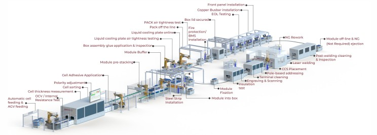
The final assembly stage involves integrating the battery module with components such as the BMS (Battery Management System), thermal management system, and casing to form a complete battery pack. This stage includes processes such as structural component installation, BMS installation, and thermal management system integration, ultimately forming a power battery pack that meets the needs of end applications.
The final stage of product quality control involves rigorous performance testing of the entire battery pack, including charge-discharge cycle testing, thermal management performance testing, and safety performance testing, to ensure that the product meets design requirements and industry standards.
Detailed Explanation of the Process Flow of the Prismatic Pack Production Line
1. Cell processing and stacking technology
The processing and stacking of square battery cells are a fundamental step in module assembly. The process involves cell loading, OCV/IR testing, processing, module stacking, soldering, inspection, and testing.
Cell loading and inspection: Square battery cells are transported to designated workstations via automated conveyor equipment. They first undergo OCV (open circuit voltage) and IR (internal resistance) testing to ensure the basic performance of the cells meets requirements. During the testing process, the system automatically records the parameter information of each battery cell and establishes a quality traceability file. For any battery cells that fail the test, the system automatically removes them to avoid affecting the quality of subsequent production.
Before cell stacking, plasma cleaning is required to remove the oxide layer and impurities from the electrode surface, ensuring welding quality. Plasma cleaning technology can effectively remove contaminants from the electrode surface, improve surface activity, and create favorable conditions for subsequent welding processes.
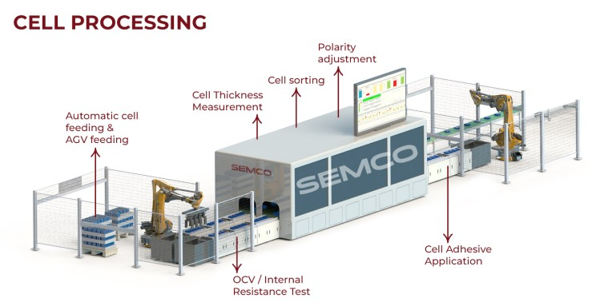
The cell stacking technology utilizes a robotic automated system to precisely stack the square battery cells according to design requirements. During stacking, it is crucial to control stacking pressure and positional accuracy to ensure the stability of the module structure. One company's square battery cell stacking system employs high-precision fixture design technology, achieving " high speed " and " high precision " during fixture changes and positioning, with a displacement accuracy of less than 5μm and a frequency greater than 10MHz.
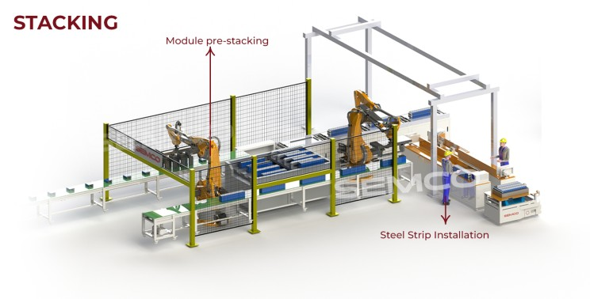
The adhesive coating and fixing process for square battery cells requires adhesive coating during stacking. A two-component adhesive applicator is used to precisely control the amount of adhesive applied, ensuring strong adhesion to the battery pack casing. The adhesive coating process not only serves a fixing function but also provides a certain degree of cushioning and insulation. The adhesive coating system has a built-in flow monitoring function, which can monitor the amount of adhesive applied in real time, ensuring the stability of process quality.
2. Module welding and connection process
The module welding and connection of square battery cells is a key step in realizing the electrical connection of the battery cells, which mainly includes bus welding, acquisition line welding and other processes.
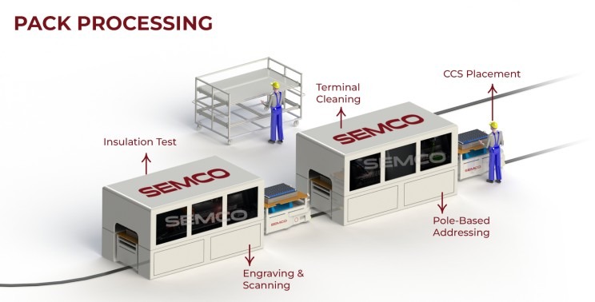
Busbar installation and welding of square cell modules: Busbar installation is typically performed manually or semi-automatically. Workers manually install the battery busbars to ensure current connection between the cells. Busbar welding is a critical process. In a specialized workstation, the busbar is welded to the terminal post to complete the series-parallel connection of the battery.
Laser welding technology is mainly used for welding square battery cells. It features high precision, high speed, and low heat-affected zone, enabling the tight connection of individual battery cells together. During laser welding, visual addressing and defocusing of the BUSBAR are required to ensure no missed welds or incomplete welds, thus guaranteeing welding quality.
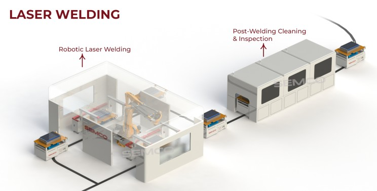
Welding quality control: After welding is completed, the weld seam is cleaned and vacuumed, and manual inspection is performed to ensure welding quality. Modern production lines also employ advanced testing technologies, such as X -ray inspection and ultrasonic testing, to perform non-destructive testing on welding quality, ensuring the reliability of the welding process.
The installation and welding of the data acquisition cable is a crucial step in achieving battery parameter monitoring. Staff members install the battery data acquisition cable to ensure the reliability of data acquisition. The acquisition line is soldered to the busbar to ensure the transmission of battery data. After the data acquisition lines are soldered, they need to be tested to ensure the accuracy of the data acquisition.
3. System Integration and Quality Control
System integration of square cells is the process of integrating modules and various components into a complete battery pack, while quality control is carried out throughout the entire production process.
The overall assembly process for square battery cells includes module installation, BMS installation, thermal management system integration, and cover plate installation. During module installation, precise fit between the module and the casing must be ensured, using locating pins and other methods to guarantee accurate positioning. BMS installation must consider heat dissipation and protection requirements and is typically installed in a specific location within the battery pack for easy maintenance and repair.
Thermal management systems for integrated square battery cells typically employ either liquid cooling or air cooling. Liquid cooling systems achieve dynamic temperature control through embedded liquid cooling plates in conjunction with the BMS (Battery Management System). The design of the thermal management system needs to take into account the structural characteristics of the battery pack to ensure uniform cooling.
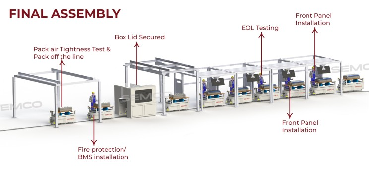
Sealing and Protection Processes: The sealing process of square battery cell packs is crucial, typically employing laser welding or mechanical sealing methods. Laser welding achieves a seal strength greater than 50 MPa, ensuring the battery pack's sealing performance. At the same time, sealing materials such as sealing rings and gaskets are installed in key areas to ensure that the protection level meets the design requirements.
Comprehensive quality inspection of square battery cell packs involves multiple stages. First, there's visual inspection, checking the battery pack's appearance quality and the integrity of its markings. Second, there's electrical performance testing, including testing basic parameters such as voltage, internal resistance, and capacity. Third, there's safety performance testing, including insulation resistance, withstand voltage, and short-circuit protection. Finally, there's environmental adaptability testing, including high and low temperature, vibration, and shock tests, ensuring product reliability.
Methodology for Logistics Simulation Analysis of Energy Pack Production Line
1. Definition of Simulation Objectives and Scope
The core objective of logistics simulation for new energy pack production lines is to optimize the logistics efficiency, equipment utilization, and capacity output of the production system by establishing a virtual model. The simulation analysis covers the entire production logistics system from raw material warehousing to finished product delivery, including key aspects such as material handling, equipment layout, inventory management, and AGV scheduling.
Capacity improvement analysis is the primary goal of the simulation. By identifying the least efficient processes in the module line (such as cell sorting, welding, and testing), the simulation quantifies the impact of each process on overall capacity. Simulation can verify the impact of different process parameters (such as welding time, adhesive application amount, and sorting criteria) on throughput and yield, balancing efficiency and quality.
Equipment utilization optimization optimizes equipment investment and layout by simulating the effects of parallel operation of multiple devices (such as multiple spot-welding machines) and buffer capacity (such as the size of the cell storage area) on production capacity. Simulation can also analyze the impact of equipment failures, maintenance, and other factors on overall production, providing decision support for equipment configuration and maintenance strategies.
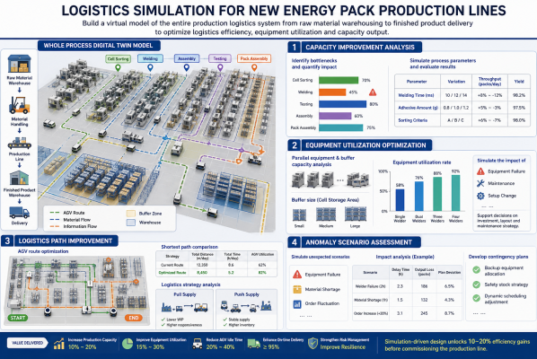
Logistics path improvement focuses on AGV delivery route optimization, material handling system design, and buffer zone capacity configuration. Simulations are used to determine the shortest path for material carts, reducing waiting time. The impact of different logistics strategies (such as pull supply and push supply) on production efficiency is also analyzed.
Anomaly scenario assessment evaluates the production line's resilience by simulating unexpected situations such as equipment failure, material shortages, and order fluctuations, and develops contingency plans. Simulation can quantify the impact of these anomalies on production plans, providing a scientific basis for risk management.
2. Simulation Software Selection and Application
The selection of logistics simulation software for new energy pack production lines needs to consider factors such as the software's functional characteristics, applicable scenarios, and user-friendliness. The following is a comparative analysis of major simulation software:
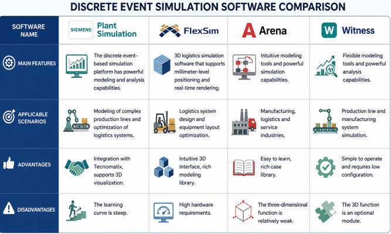
A Plant Simulation application case study: A company uses Plant Simulation 16.0 software and combines it with the Standard Layout (LO), VDA Facility, and VDA Powertrain modules from the VDA library. By cleverly integrating position-guided and length-guided modules, they achieve accurate simulation of the production process. By incorporating layout planning into logistics simulation, the team can accurately visualize the layout, identify space optimization opportunities, and directly generate layout changes from the logistics simulation.
FlexSim Application Advantages: FlexSim is a leading production line simulation software with a highly intuitive 3D modeling environment. Its main features include drag-and-drop modeling, a rich library and templates, and powerful data analysis capabilities. FlexSim also offers a wide range of preset templates and libraries that can simulate various types of production lines and logistics systems.
Arena Features: Arena is a widely used software for production line and manufacturing system simulation, featuring intuitive modeling tools and powerful simulation capabilities. Arena provides various modules, such as " Create, " "Process, " "Distribute, " and "Terminate," to build product production processes and simulate decisions and changes in the production line by adding conditional statements and logical branches.
Witness software features: Witness is a product of the British Lanner Group. It is a planar discrete system production line simulator, easy to operate, and can be used flexibly even on low-configuration computers. It is a long-established brand in production line simulators. As an option, it also features 3D stereoscopic display (VR) capabilities, expanding its applicability.
3. Modeling Methods and Key Parameter Settings
The modeling method for logistics simulation of new energy pack production lines needs to comprehensively consider the complexity of the production system and the simulation accuracy requirements and adopt a multi-dimensional modeling strategy.
The modeling methods chosen primarily combine discrete event simulation and continuous system simulation. Discrete event simulation is used to model discrete events in the production process, such as equipment failure, material arrival, and process completion. Continuous system simulation, on the other hand, is used to model continuous variable changes in the production process, such as temperature, humidity, and current.
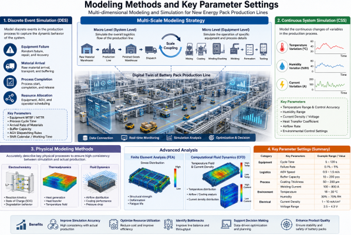
Physical modeling methods accurately describe key physical processes such as electrochemistry, thermodynamics, and fluid dynamics to simulate core processes like battery material preparation, cell assembly, and formation, ensuring a high degree of consistency between simulation results and actual production. Finite element analysis (FEA) and computational fluid dynamics (CFD) are employed to dynamically analyze the internal stress distribution, temperature field, and current density distribution of the battery.
The multi-scale modeling strategy employs a multi-scale modeling approach, combining macroscopic process flows with microscopic operational details to improve the accuracy and applicability of the model. It simulates the overall logistics flow of the production line at the macroscopic level and the operation of specific equipment at the microscopic level, achieving accurate modeling of the entire process through scale coupling.
Key parameter settings include production cycle time, equipment utilization rate, and material conversion rate, ensuring the model accurately reflects actual production conditions. Specific parameter settings are as follows:
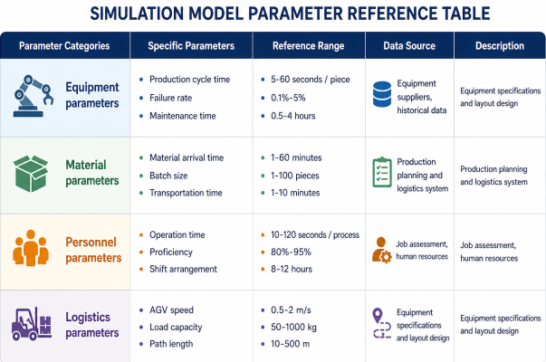
Data collection requires the actual measurement of key data such as the time of each process (with second-level accuracy), equipment failure interval (MTBF), and material delivery cycle. For example, the measured average time for cell welding on a certain production line was 12 seconds, and the average failure interval was 2 hours. Data collection needs to cover various operating conditions, including normal production and abnormal situations, to ensure the comprehensiveness and accuracy of the model.
4. Simulation Analysis Index System
Logistics simulation for new energy pack production lines requires the establishment of a comprehensive indicator system covering multiple dimensions such as capacity, efficiency, cost, and quality, to provide a scientific basis for production optimization.
Capacity is the most crucial evaluation metric, encompassing theoretical capacity, actual capacity, and capacity utilization rate. Theoretical capacity refers to the maximum output capability of a production line under ideal conditions, while actual capacity refers to the actual output considering various constraints. Capacity utilization rate is the ratio of actual capacity to theoretical capacity. One company, through simulation optimization, increased its capacity from 1200 modules / day to 2160 modules / day, achieving an 80% efficiency improvement.
Equipment efficiency indicators mainly include equipment utilization rate, equipment failure rate, and overall equipment efficiency (OEE). Equipment utilization rate reflects the actual usage of equipment, equipment failure rate reflects equipment reliability, and OEE comprehensively considers equipment availability, performance efficiency, and quality pass rate. Through simulation analysis, a company found that the inspection process was the bottleneck (cycle time 20 seconds / module). By adding one inspection device, the cycle time was reduced to 10 seconds / module, and the equipment utilization rate increased from 85% to 95%.
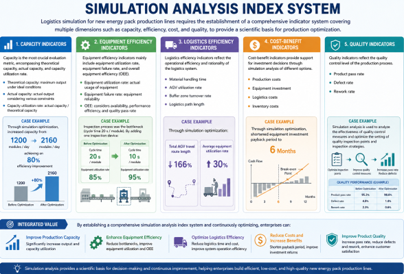
Logistics efficiency indicators include material handling time, AGV utilization rate, buffer zone turnover rate, and logistics path length. These indicators reflect the operational efficiency and rationality of the logistics system. Through simulation optimization, a company reduced the total length of its AGV travel routes by 166%, while increasing the average equipment utilization rate by 30%.
Cost-benefit indicators include production costs, equipment investment, logistics costs, and inventory costs. Simulation analysis of the cost-benefit of different options provides support for investment decisions. One company, through simulation optimization, shortened its equipment investment payback period to 6 months.
Quality indicators include product pass rate, defect rate, and rework rate. These indicators reflect the quality control level of the production process. Simulation analysis is used to analyze the effectiveness of quality control measures and optimize the setting of quality inspection points and inspection strategies.
Simulation Analysis for Prismatic Cell
Simulation of a square battery cell production line needs to balance flexibility and standardization. During the simulation process, special attention should be paid to aspects such as process adaptability, equipment compatibility, and quality stability.
The simulation of a square battery cell production line needs to adapt to the production of various cell specifications. The simulation should focus on issues such as changeover time, tooling adjustments, and parameter settings. By establishing a simulation model of the flexible production system, the impact of different product switching strategies on production efficiency can be analyzed.
Equipment compatibility simulation for a prismatic battery cell production line requires equipment with good compatibility to adapt to the production needs of different cell specifications. The simulation needs to evaluate the rationality of the equipment's compatibility design and analyze the impact of equipment adjustments on the production schedule.
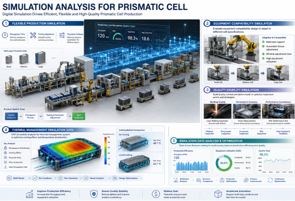
The quality stability of prismatic battery cells has a significant impact on the performance of the entire battery system. Simulations need to focus on issues such as welding quality, dimensional accuracy, and performance consistency. By establishing a quality control simulation model, the setting of quality inspection points and inspection strategies can be optimized.
The thermal management system design for prismatic battery cells is complex and requires CFD simulation analysis of key parameters such as cooling effect and temperature distribution. The simulation needs to consider factors such as the battery pack's structural characteristics, cooling methods, and heat dissipation paths to optimize the thermal management system design.
Conclusion
With the rapid development and technological advancements in the new energy vehicle industry, pack production lines are facing higher performance requirements and more complex production challenges. Future development trends include: continuously improving levels of intelligence, with artificial intelligence, machine learning, and other technologies being increasingly widely applied in simulation analysis; deepening digital transformation, with digital twin technology providing new means for production line optimization; and the growing acceptance of green manufacturing concepts, requiring simulation analysis to consider more sustainable development factors such as energy consumption and environmental impact.
For logistics simulation engineers, mastering the technological processes and simulation analysis methods of new energy pack production lines is a crucial foundation for career development. Through continuous learning and practice, accumulating industry experience, and enhancing professional skills, they will be able to play a greater role in the development of the new energy industry and contribute to achieving carbon neutrality and sustainable development.
Contact Semco Infratech to discuss your BESS manufacturing requirements and discover how automatic assembly solutions can enhance your production efficiency, ensure product quality, and accelerate your path to market competitiveness.
For demos, solutions, or collaborations:
Connect at sales@semcoindia.com | +91-8920681227 | www.semcoinfratech.com